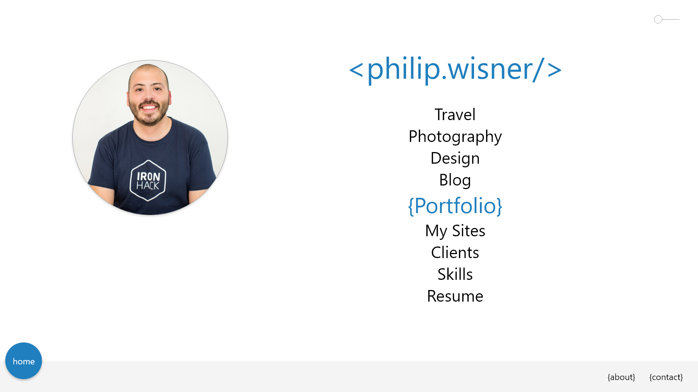

12/15/2017
The Future
While creating the current design I came up with other designs and alternate homepages. Eventually I would like to have the ability to randomize my homepage design and have a dropdown menu to select a theme. Similar to the concept of CSS garden, where you keep all the same content but just change the CSS to show the power of CSS to dynamic change your content and how its presented.
11/10/2017
Creating it
So now it was time to actually create the website. I decided I was going to do it as a basic static website, so that I can get it up and running quickly. I decided to use Bootstrap just to handle the grid layout of the portfolio along with the side nav menu. I could've done this without Bootstrap but I decided to use it so I could save time by writing extra media queries to handle any other issues. I also decided to use Sass because I like being able to keep the pages as partials, along with using global variables for font and colors, so that I can change it all at once. I also like to use Sass because I have a mixin for responsive font size, so that I can make it size easily across devices.
Then it came down to just writing and adding all the content for each individual page. This just takes time because I had to think of everything to add and then how to add it. This has been an ongoing process because I am creating new stuff every day. So keep checking back because I am always coming up with new designs, websites and apps.
10/25/2017
Design Part 2
Now that the bootcamp had ended I had time to focus on completing my personal website. I wanted to have this completed so that I could use it as a portfolio to show recruiters and employers the work I have done. I opened my wireframes and I saw all these designs and different layouts and I was just overwhelmed. I now had all this content, code and apps from Ironhack and I needed a way to add them into the website as well. I then just spent time going through a bunch of other people's portfolios and looking at design websites to try and get an inspiration. In the end I decided I still wanted a very simple and clean display, but also have a consistent side navigation on the left so that you can easily navigate through all the categories. This is where the struggle came to create all the categories and how they would be displayed. I decided to use blue as my accent color, because it's my favorite color. Also I decided to use <> and {} as accents to my design because they are so integrated into the daily life of a developer. So after a few days of tweaking around I was able to come up with a first version design I was content with, so that I could focus on actually coding the website.
Take a look at the wireframes here
08/12/2017
Starting Ironhack
Only around a week later did I decide to join the Ironhack Bootcamp in Barcelona. Naively in my mind I thought I could start updating my website and adding stuff to it during the bootcamp. Nothing was further from the truth, I was so insanely busy during the bootcamp I completely forgot about my website. As time went on, I would get ideas for what to do with my website and what I should add to it, but I never had any time to really focus on it. Hanging around the UX/UI people would give me inspiration because they were constantly working on cool stuff. I started making a bunch of different homepage designs really quickly when inspiration struck.
Read about my Ironhack experience here
07/26/2017
Design Part 1
Now that I had my website live, I needed to have an actual website. I had just uploaded a dummy website I created to test it, but it wasn't my real website. So the first thing I do when it comes to creating something original, is to wireframe it and design it before I code. I started sketching some designs but nothing really stuck out to me. Then I decided I wanted something minimalist and that was easy to see all the content. So I came up with a bunch of categories related to the stuff I do, like websites, design, travel, photography, etc. I decided that would be on my homepage so people could chose what they wanted to see. Along with having a contact, about and home button on a fixed bottom navigation bar. So being satisfied with this design, I started to code it. I wrote it very quickly because it was a basic layout, but I wasn't really satisfied with it. I decided to upload it just so I have a real website live that at least has my name on it, knowing I would have to update it soon.

07/24/2017
Getting started
Creating my personal website has been an ongoing battle ever since I started learning web development. I knew I wanted to create my own website to demonstrate all of the things I created. The first battle started with buying the domain and finding somewhere to host it. I chose to buy my domain from Google because they had nothing to upsell or keep marketing to me, so I could just get the domain and then take care of hosting wherever I wanted. After some research I saw that Amazon lets you host a basic static website on AWS for free to very little. So I decided I would try to host it on Amazon because it wasn't going to be a heavily used site. That process turned out to be way more complicated than they made it seem. Luckily I had some background working with AWS and networking so I was able to figure it out with some trial and error.
Basically to host a static website on AWS you need to upload the static content to S3, which then becomes a bucket. Then you have to configure the DNS using Route 53, and because my domain is hosted on google I had to copy this information into my Google Domain account so that it would use the correct DNS. The last step was to use CloudFront to allow the website to be hosted using Amazon's CDN and your domain is pointed to this URL.
In the end, after doing all of this my domain still wasn't live, so I just stopped for the day. When I checked the next day it was working, it just needed some time to configure everything before it went live.